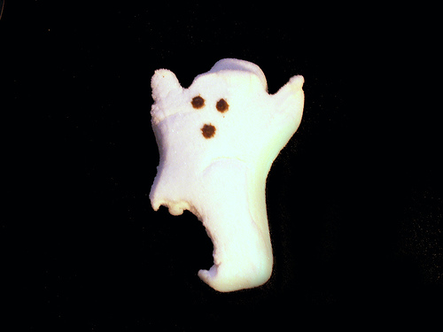

While scale3d(0,0,0) internally computes to matrix3d(0,0,0,0,0,0,0,0,0,0,0,0,0,0,0,1)
Setting matrix3d(0,0,0,0,0,0,0,0,0,0,0,0,0,0,0,1) yields on chrome to a non-centric zoom and does not scale in safari at all.
Scientific number are not allowed in CSS - but they should be.
